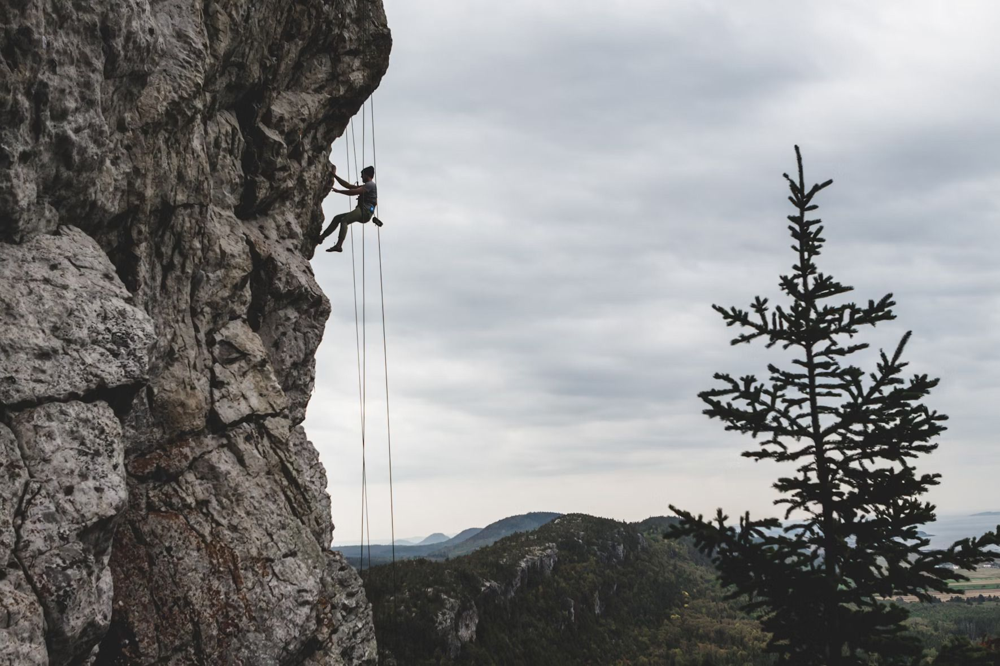

Rope Based Activities
All rope-based activities take place on site with full safety equipment provided.
Climbing
Scale the highs of one of the local quarry slabs.
Max group size 8.
Ages 8+
Abseiling
‘I was really scared about the abseiling but the instructor Mike was really encouraging and helped me do it, thanks Mike’- Sophie, Age 10

Take the scary step and abseil from the top of one of the local quarry slabs. There is a lovely view... if you are brave enough to look down!
Max group size 8.
Ages 8+
Click here for some beginner's abseiling tips!
Pole Climb
Ever wondered how telephone engineers get to the top of the telephone poles?
Well, here’s your chance to find out.
Max group size 8.
Ages 8+